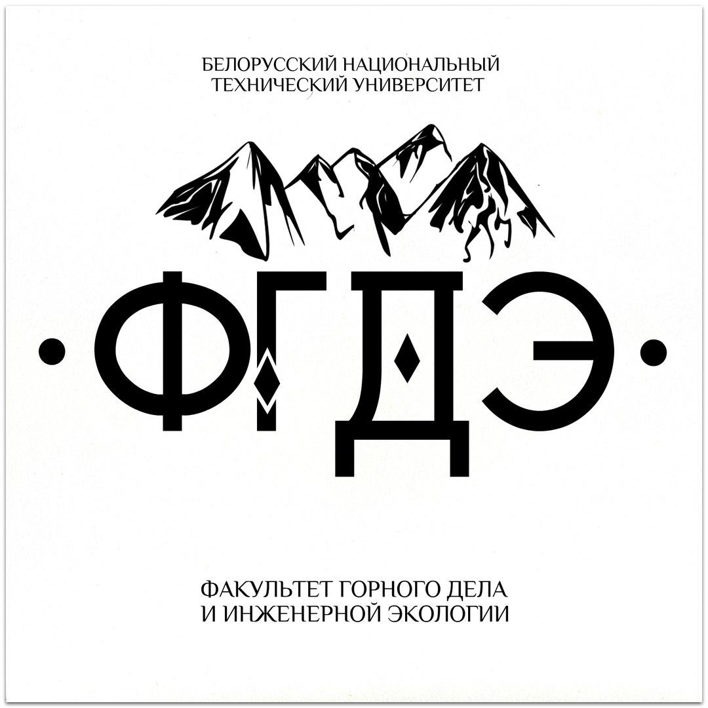

Контактная информация о приеме в магистратуру по факультетам
АТФ(Автотракторный)
Адрес:
ул. Якуба Коласа, 12, корпус 8,а.419, а.410
Заместитель секретаря приемной комиссии:
Рахлей Андрей Иванович
Телефон:
+375173310548

ФГДЭ (Горного дела и инженерной экологии)
Адрес:
ул. Якуба Коласа, 14, корпус 9, а.221а
Заместитель секретаря приемной комиссии:
Кузьмич Валентина Андреевна
МСФ (Машиностроительный)
Адрес:
пр. Независимости, 65, корпус 6, а.321, а.322
Заместитель секретаря приемной комиссии:
Шпургалова Марина Юрьевна
МТФ (Механико-технологический)
Адрес:
ул. Якуба Коласа, 24, корпус 7, а.27
Заместитель секретаря приемной комиссии:
Белый Алексей Николаевич
Телефон:
+375172924253
ФММП (Маркетинга, менеджмента, предпринимательства
Адрес:
пр. Независимости, 67, корпус 18, а.205б
Заместитель секретаря приемной комиссии:
Карпович Виктор Францевич
ЭФ (Энергетический)
Адрес:
пр. Независимости, 65, корпус 2, а.203, а.307
Заместитель секретаря приемной комиссии:
Корсак Екатерина Павловна
ФИТР (Информационных технологий и робототехники)
Адрес:
ул. Б. Хмельницкого, 9, корпус 11а, а.204, а.404
Заместитель секретаря приемной комиссии:
Миронович Артем Викторович
ФТУГ (Технологий управления и гуманитаризации)
Адрес:
ул. Якуба Коласа, 14, корпус 9, а.210
Заместитель секретаря приемной комиссии:
Кандричина Ирина Николаевна
Телефон:
+375172925594
ИПФ (Инженерно-педагогический)
Адрес:
ул. Ф. Скорины 25 корпус 3,уч. корпус 20, а.407
Заместитель секретаря приемной комиссии:
Орлова Екатерина Петровна
Телефон:
+375172212043
ФЭС (Энергетического строительства)
Адрес:
пр. Независимости, 67, корпус 18, а.107, а.110
Заместитель секретаря приемной комиссии:
Щербакова Мария Константиновна
АФ (Архитектурный)
Адрес:
Пр. Независимости, 65, корпус 1, а.275, а.334
Заместитель секретаря приемной комиссии:
Прокопов Дмитрий Николаевич
Телефон:
+375172939665
СФ (Строительный)
Адрес:
ул. Ф. Скорины, 25 корп. 1, уч. корпус № 16, а.608
Заместитель секретаря приемной комиссии:
Ольшевская Диана Викторовна
ПСФ (Приборостроительный)
Адрес:
ул. Якуба Коласа, 22, корпус 17, а.302
Заместитель секретаря приемной комиссии:
Монич Сергей Геннадьевич
Телефон:
+375172927255
ФТК (Транспортных коммуникаций)
Адрес:
Пр. Независимости, 65, корпус 1, а.379, а.380
Заместитель секретаря приемной комиссии:
Кузнецова Александра Алексеевна
Телефон:
+375173179884
СТФ (Спортивно-технический факультет)
Адрес:
пр. Независимости, 65, корпус 11б, а.106
Заместитель секретаря приемной комиссии:
Бурков Сергей Олегович
Телефон:
+375172373931